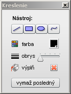

Kreslenie

plávajúce okno Kreslenie
Editor máp umožňuje kresliť do mapy jednoduché geometrické tvary. Kresby sú uložené nad mapu a pod značky. Na kreslenie slúži paletka v plávajúcom okne Kreslenie, ktorú je možné otvoriť tlačidlom Kreslenie v lište mapového okna.
Paletka obsahuje tieto možnosti:
- Nástroj - stlačením niektorého zo štyroch tlačidiel sa vyberie jedna z možností kreslenia: čiara, obdĺžnik, ovál, voľné kreslenie. Tlačidlo zvoleného nástroja má červenú ikonu a je zatlačené. Opätovným stlačením tlačidla alebo zatvorením paletky sa výber nástroja zruší.
- farba - umožňuje vybrať si farbu obrysu (prípadne výplne) z preddefinovanej palety farieb.
- obrys - určuje hrúbku obrysu pri kreslení v rozmedzí 0 až 4 pixely. Hrúbka 0 je tenká čiara (tzv. hairline), ktorej hrúbka sa nemení ani počas zväčšovania mapy.
- výplň - pokiaľ je táto možnosť zakliknutá, obdĺžniky a ovály budú vyplnené
- vymaž posledný - umožňuje zmazať poslednú kresbu. Postupným stláčaním je možné zmazať všetky kresby.
Pokiaľ je zvolený v paletke Kreslenie niektorý z kresliacich nástrojov, je možné začať kresliť kdekoľvek do práve otvorenej mapy. V takomto prípade sa pri pohybe kurzora myši nad mapou zmení kurzor a zobrazuje zvolený nástroj.
Všetky kresby sa pri uložení mapy na disk ukladajú do súboru a pri opätovnom otvorení súboru sa zobrazia.